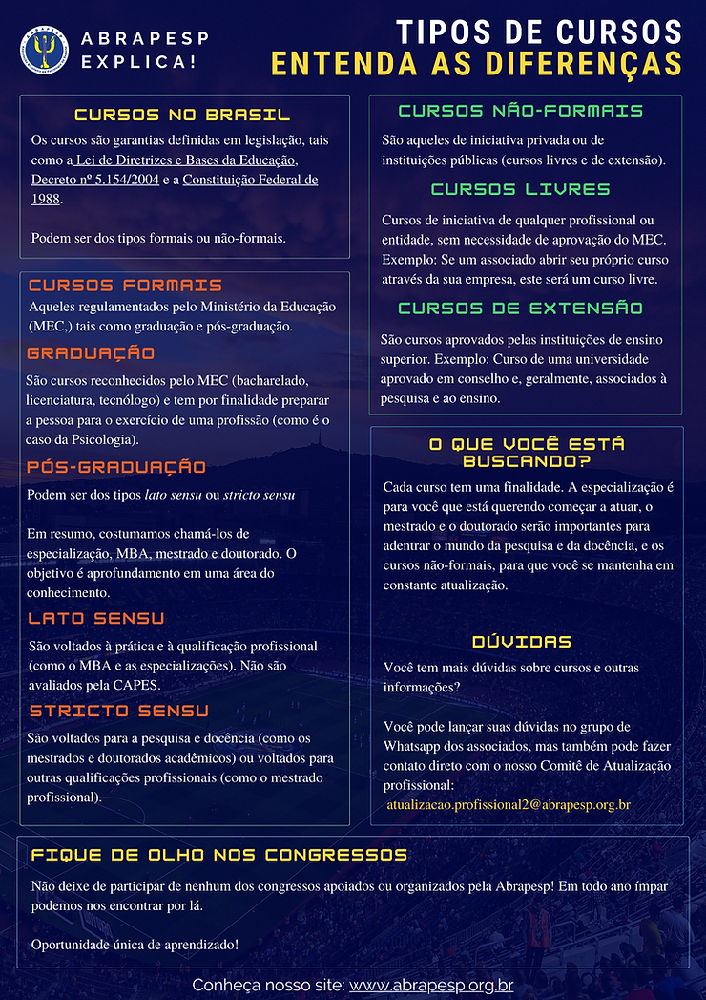

Nessa semana, a ABRAPESP lança um infográfico sobre os tipos de cursos de Psicologia do Esporte no Brasil. O tema ganhou destaque por se tratar de uma das perguntas mais frequentes nas redes de comunicação da Associação. Nosso Comitê de Atualização Profissional abraçou a causa e desenvolveu o material abaixo:

Tivemos uma conversa com Matheus Vasconcelos, membro do Comitê de Atualização Profissional, sobre essa ação:
ABRAPESP: Por que esse infográfico foi criado? Para responder qual demanda?
MATHEUS VASCONCELOS: O infográfico foi criado para sanar as principais dúvidas de estudantes e profissionais de psicologia sobre os cursos no Brasil. Com a expansão dos cursos online, há muito desencontro nas informações que chegam para as pessoas. Há quem adquira cursos de formação, por exemplo, e considerem que se trata de uma especialização, porém são cursos distintos.
ABRAPESP: Realmente há muitas confusões em decorrência da falta de informação de qualidade. E que tipo de fontes o Comitê levou em consideração para criar esse material?
MATHEUS VASCONCELOS: Levamos em consideração as legislações existentes sobre educação no Brasil, destacando tanto o que são cursos formais e não-formais, bem como suas categorizações em cursos lato sensu, stricto sensu, cursos livres e cursos de extensão.
ABRAPESP: E vocês acreditam que essa ação consegue sanar as dúvidas sobre o tema?
MATHEUS VASCONCELOS: Acreditamos que a organização dessa informação é só o início de um debate importante que precisamos fazer sobre a formação em psicologia do esporte no Brasil. A ABRAPESP tem o importante papel de levar informação de qualidade sobre a área para a toda sociedade a para a categoria que hoje está envolvida com nosso campo de atuação.
ABRAPESP: Com certeza! Agradecemos a iniciativa do Comitê! Vocês gostariam de acrescentar algo?
MATHEUS VASCONCELOS: O Comitê de Atualização espera que essa informação seja capaz de diminuir um pouco as dúvidas que muitos tem na hora de escolher qual curso adquirir para começar a se capacitar na área.
ABRAPESP EXPLICA TIPOS DE CURSOS
Conheça os Comitês da atual gestão clicando aqui.